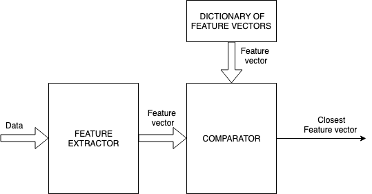
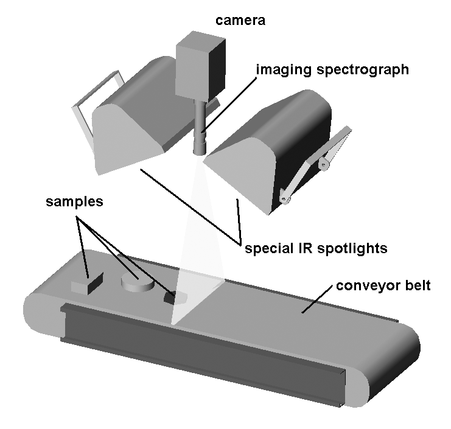
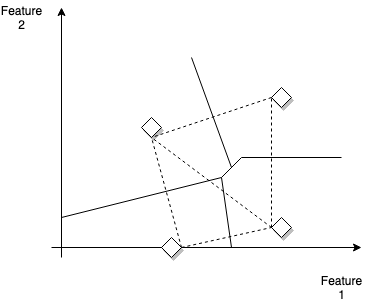
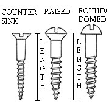

k-Nearest Neighbors (kNN) Classification#
kNN belongs to the class of algorithms that were extensively treated in pattern recognition literature. It is still extensively being used today especially in settings that require very fast decision/classifications involving massive datasets. The general block diagram governing such systems is shown below.

General nearest neighbor feature recognition
Originally treated by Patrick Winston (MIT) is the conveyor belt classification use case shown below.
 Widget classification system based on computer vision
Lets assume that in a factory a high speed conveyor belt is carrying hundreds of widgets per minute and a system of cameras is used to classify them and instruct actuators that place them into bins. Obviously the system must satisfy strict throughput requirements. Lets assume for purely instructive purposes that the assignment of each widget is based on two features that shown below.

Example decision boundaries between labels in the feature space.Stars are the distinct widgets (labels)
Each pair of prototype widgets can be considered as defining a linear decision boundary - the line perpendicular to the line that connects them. So if the widget was screws, figure below shows two features categories, head-type and length.

Widgets that need to be classified in the conveyor belt system
In a hypothetical case of manufacturing screws with two lengths \(l_1, l_2\) and two head types (flat and round) we will have four possible labels (each associated wiht the combination \(\{(l_1, F), (l_2, F), (l_1,R), (l_2, R)\}\) as shown in the picture above and we can draw corresponding decision boundaries. Why the decision boundaries are like this (also called perpendicular bisectors) ? The decision rule is a Euclidean distance metric - any point in that line has the same distance to either of the two labels involved.
As screws go through the conveyor depth, manufacturing defects cause each screw to appear almost anywhere in the feature space. One intuitive and straightforward approach is to assign the label associated with the area enclosed by the decision boundaries (and the axes) and classify the screw as the label of the corresponding prototype widget. This is in essence the principle behind the k nearest points (or neighbors) algorithm.
In a sightly more formal setting, and to be able to address far more complex decision boundaries than the above, we are given data points in a training set \(D = \{(x_i,y_i)\}, i=\{1, ..., m\}\) and we are asked to classify points that are in the test set. The only variable of the kNN algorithm is the number \(k\) which is the number of nearest neighbors that we consider in the classification decision. An example for two classes is shown in the figures below for two cases of \(k\). The plot corresponds to the case we have two features like before \(x_1, x_2\).
 Decision boundary for k=1
Decision boundary for k=1
 The point to be classified is the black diamond and the closest data points for \(k=3\) are also shown.
The point to be classified is the black diamond and the closest data points for \(k=3\) are also shown.
The algorithm effectively positions a sphere on the data point we want to classify whose radius is large as the it needs to be to enclose \(k\) closest points irrespectively of their class. Obviously for the dimensions of the examples above, the sphere is a circle. As expected, we see that \(k\) affects the degree of smoothing, so that small \(k\) produces many small regions of each class, whereas large \(k\) leads to fewer larger regions. In essence the algorithm for \(k>1\), considers a majority vote between the \(k\) closest points to the point we need to classify with ties broken at random.
One of the limitations of the knn algorithm is the requirement that the dataset \(D\) is stored in memory and that the algorithm itself is dependent on efficient search algorithms that allow it to go over the data and find the nearest neighbors. There are solutions to both of these problems though and if implemented properly we get to be able to train for fairly complex decision boundaries that generalize well, without the complexity associated with learning parametric models. In practice, approximate nearest neighbor problems in high dimensions are solved with dedicated libraries such as Annoy cite and FAISS cite. Others are benchmarked cite.